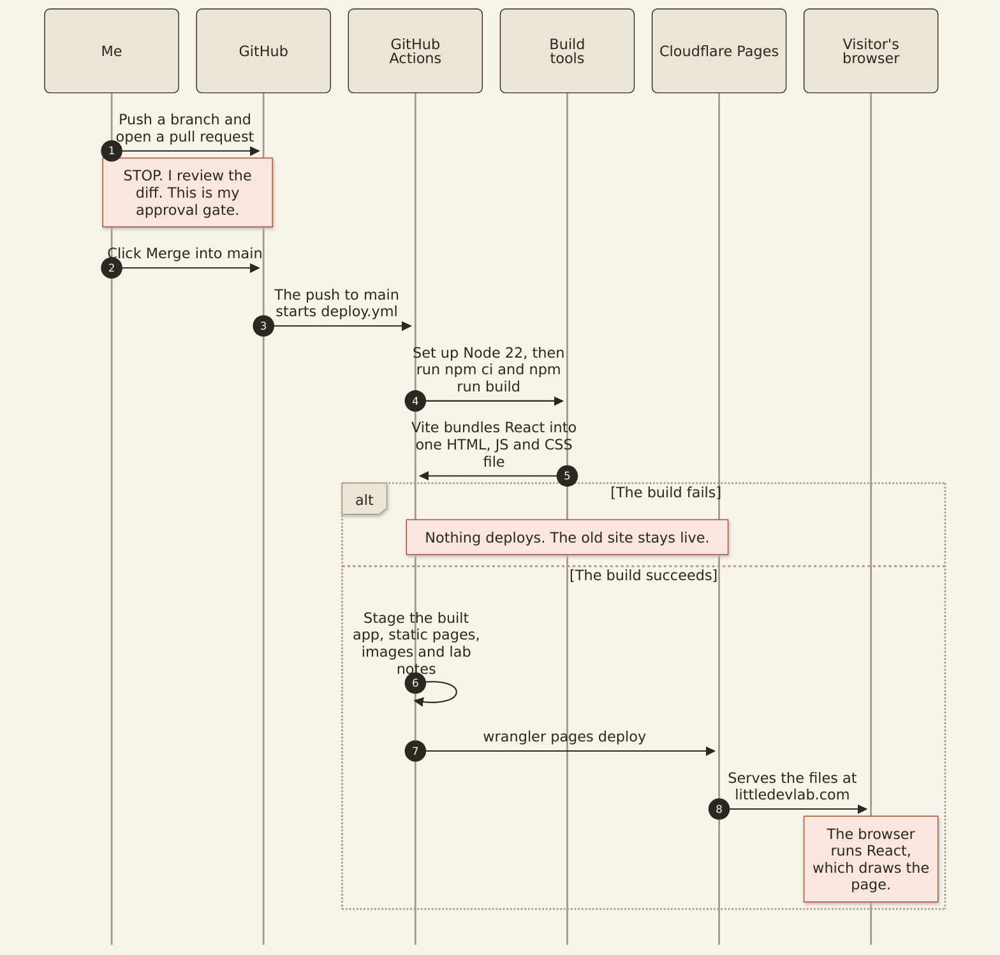
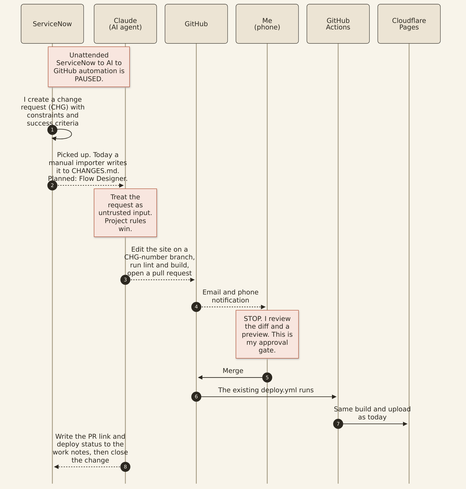

Who Should Be Allowed to Deploy My Website?
I mapped the build chain, separated “building” from “publishing,” weighed three deployment-trigger options, and ended up with GitHub as the gatekeeper.
In an effort to “just get it out,” I gave Claude too much agentic power, and it led to my site getting updates I hadn’t expected. I over-rotated and removed all agentic deployment, only to increase the complexity — and to challenge my rusty developer-tool experience.
While mapping how LittleDevLab gets from code to littledevlab.com, I realized I had been lumping several very different jobs together. Node, npm, Vite, React, GitHub Actions, Wrangler and Cloudflare all participate in publishing the site, but they do not all do the same thing.
That raised the useful architecture question:
Who should actually be allowed to trigger a production deployment?
This matters even more as I add ServiceNow and an AI coding agent into the workflow. If Claude is allowed to edit code and run builds, I do not want “run a build” to quietly mean “publish this to the internet.”
First: what each piece actually does
React
React is the JavaScript library the interactive products page is written with. It does not deploy anything. Vite takes the React code and turns it into files a browser can use.
Vite
Vite is the build tool that bundles the code. In my setup it turns the React app into ordinary static files: HTML, JavaScript and CSS.
Node
Node is the JavaScript runtime used during the build. GitHub Actions starts a temporary machine with Node installed so the build tools can run.
npm
npm installs the project dependencies and gives me convenient commands such as npm ci and npm run build. It can also run a deployment command if I decide to define one.
Wrangler
Wrangler is the Cloudflare command-line tool that actually uploads the finished files to Cloudflare Pages.
GitHub Actions
GitHub Actions is the automation engine. It watches for the event I care about — a push to main, which in my process means a reviewed pull request was merged — and then runs the build and deployment process.
A trigger decides when something is allowed to happen. A tool performs the work after that decision has been made.
Option 1: building the site automatically deploys it
npm run build
↓
Vite builds the React app
↓
Wrangler deploys it
↓
Production changesThe obvious advantage is simplicity: run one command and everything happens. I could wire this through an npm postbuild script, a Vite plugin, or another build hook.
But I want a build to be safe to run anywhere. I should be able to run npm run build in a Codespace just to check whether the code works. Claude should also be able to run builds while validating a change.
If “build” can implicitly change production, then a routine validation command suddenly has a very surprising side effect. That gets especially uncomfortable once an AI agent is involved.
Option 2: let npm own the deployment
npm run deploy
↓
npm run build
↓
Vite builds React
↓
Wrangler deploys the resultThis is a much better idea. The deployment implementation can live with the project instead of being buried in workflow YAML, and the same command could be used from GitHub Actions or another CI system later.
I actually like that portability. A GitHub Actions workflow could become almost trivial:
npm ci
npm run deployBut there is still a distinction I want to preserve: npm may know how to deploy, but I do not want npm deciding when production deployment is allowed.
If Cloudflare credentials were available in every environment that could run npm, a developer — or an agent — could bypass the approval path.
Option 3: GitHub decides when production deployment happens
This is the model I am using. One caveat: today it is enforced mostly by my habits, not by GitHub settings. The section on what is locked down covers that.
The trigger is a reviewed pull request being merged into main.
That gives each part one clear responsibility. GitHub decides when. GitHub Actions coordinates what happens next. Node/npm/Vite build the application. Wrangler uploads it. Cloudflare serves it.
Current workflow
This is the build-and-publish path that exists today. Click the image to open it full size.


Diagram 1 — How a change reaches littledevlab.com today. Everything here is built and working. The note marked STOP is my review.
Why this gets more important with ServiceNow + Claude
The future workflow I am designing gives Claude enough power to do real engineering work without quietly giving it the keys to production.
The key word there is STOP. Claude can write most or even all of a change, but the branch is not production. A pull request is not production. Even a successful production build is not production.
Only a merge to main starts a deployment. Whether that is really only me depends on what GitHub enforces, which is the next section.


Diagram 2 — Planned ServiceNow-driven workflow. Solid arrows exist today. Dashed arrows are planned, not built. The notes mark the pause on unattended automation and my review.
What is locked down now
Labeling my review an “approval gate” on a diagram is not the same as GitHub enforcing it. When I first published this note, the gaps were real: main had no protection, any branch could deploy by hand, the Cloudflare credentials were readable from any branch, and nothing checked a pull request before I merged it. Within a day of publishing, I closed all four.
Enforced now
- A failed build stops the deployment before Wrangler runs.
- Changing
maintakes a pull request. A ruleset onmainrequires a pull request and a passing build check, and it blocks force pushes and deleting the branch. The first time I tried to edit a file onmainin GitHub’s web editor afterward, it refused and offered to make a new branch instead. - Only
maindeploys. The deploy job checks the branch before it runs, so a manual run started from any other branch is skipped. - The Cloudflare credentials belong to
main. They live in a GitHub environment namedproductionthat onlymaincan use. I created a new Cloudflare token for it, scoped to one account, instead of moving the old one, which could reach every account. - Every pull request is linted and built. A separate workflow runs lint, the Vite build and the same staging step as the deploy. It has no Cloudflare access. It passed on its first run.
- My Codespace login can push content, but GitHub will not let it change the workflow files. I found that out when a push was rejected. I kept it that way, so I made every workflow change on this list myself in GitHub’s web editor, each through its own pull request.
What it still does not do
The ruleset requires a pull request, but zero approvals. I work alone, and GitHub does not let me approve my own pull request. That means anything with write access, including my Codespace login, can open a pull request and merge it once the check is green. The rule guarantees a pull request and a passing build. The review is still mine to do.
One cleanup came out of this too. The deploy workflow had a step that created the Cloudflare Pages project. It only mattered on the first deploy, and after that it logged “Action failed” on every run while the deploy itself succeeded. A fake failure on every run teaches you to ignore real ones, so I removed it and updated the workflow’s actions to their current versions in the same pull request.
“My approval gate” now describes what GitHub prevents, not just the process I follow, with the one caveat above.
Failure behavior: another reason I like this model
If I merge a change and the build fails, the deployment stops before Wrangler runs. Cloudflare continues serving the previous version.
A broken build does not automatically become a broken website. That is exactly the behavior I want.
Final workflow plan
| Component | Responsibility |
|---|---|
| GitHub | Decides when: a merge to main starts a deployment. |
| GitHub Actions | Orchestrates the build and deployment. |
| Node / npm / Vite | Build the application. |
| React | The library the products page is written with. |
| Wrangler | Uploads the finished static site. |
| Cloudflare Pages | Hosts and serves the finished site. |
I may still move more of the deployment mechanics into package.json later. For example, GitHub Actions could eventually run:
npm ci
npm run deploy:productionThat would give me the portability of npm without changing the approval model.
GitHub controls when.
Node, npm and Vite handle how the application is built.
Wrangler performs the upload.
Cloudflare serves the result.
Most importantly: building the website is not permission to publish the website.